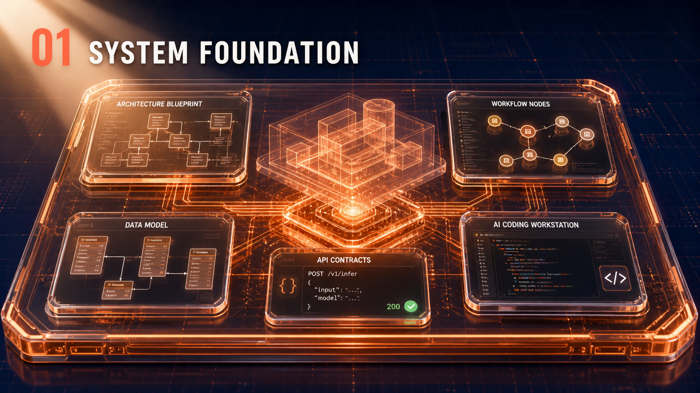
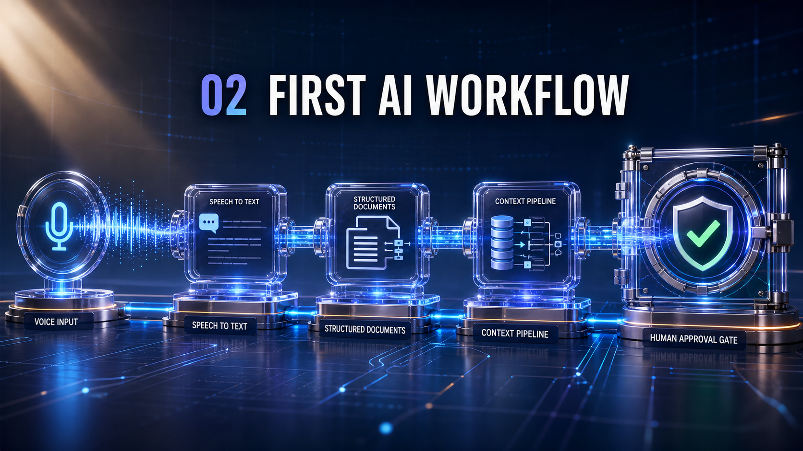
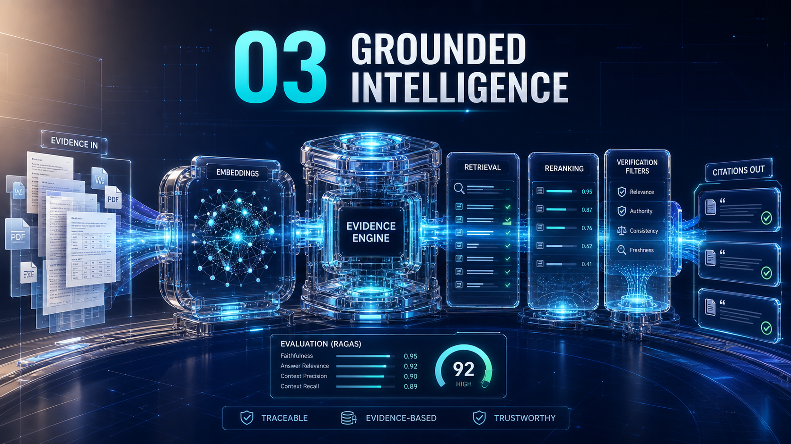
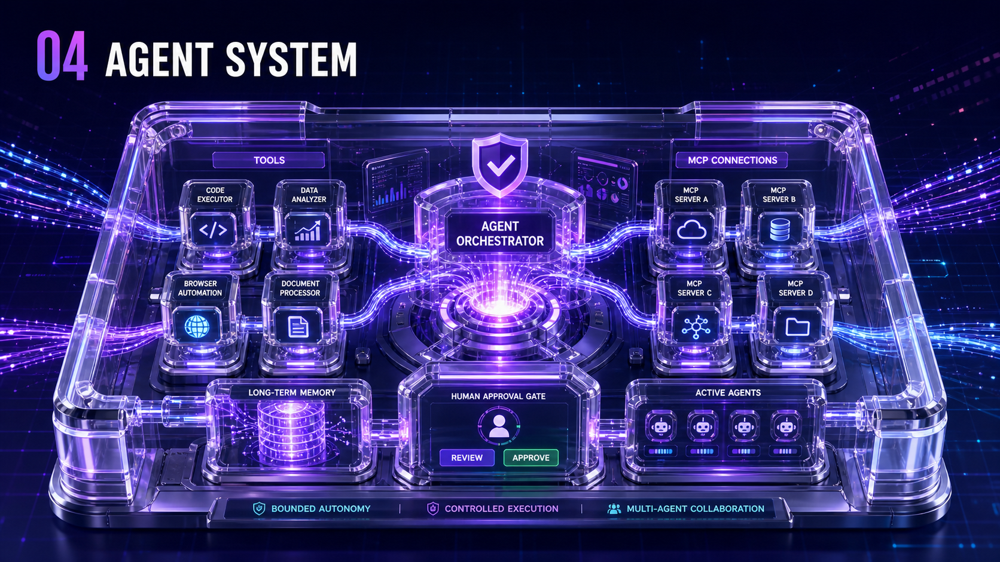
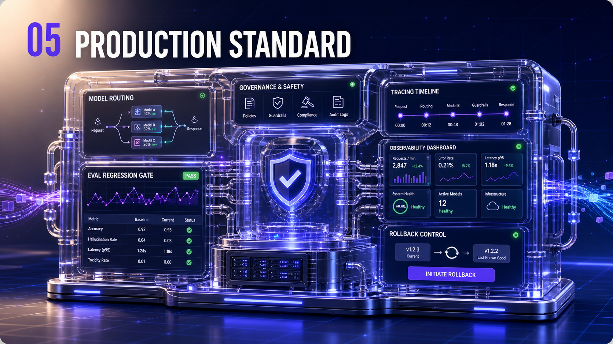

最近很多人都在做 AI Agent。
说实话，现在做一个能跑的 Demo 已经不算难了。调个 API，写几段 Prompt，再接上一个聊天界面，很快就能做出点东西。
但只要把它放进真实项目，事情马上就不一样了。
它给出的答案，有没有资料依据？
它可以调用哪些工具，权限边界在哪里？
执行出错以后，能不能及时停下来？
遇到关键操作，能不能先让人确认？
整个运行过程，能不能评测和追踪？
这些才是做 Agent 真正费脑子的地方。
所以 9 月 10 日，Lightman 准备开一场 AI Engineer 实战公开课，现场手搓一只 OpenClaw「龙虾」给大家看。
这次不放录屏，现场手搓
这场公开课不会播放提前准备好的录屏。Lightman 会直接 Live Coding，从项目搭建开始，现场手搓一只 OpenClaw「龙虾」，再把 RAG 检索、MCP 工具调用、执行边界、人工审批和运行追踪一项项做进去。
当天会做到这些：
- RAG 知识检索与 Citation
- MCP Tools 与 Tool Calling
- Agent Loop 与执行边界
- Human Approval 人工审批
- 失败处理与运行追踪
简单来说，就是看看怎么让 Agent 不只是“会回答”，还能够干活，同时别乱来。
第 07 期，改的不只是几个课名
AI Engineer 第 07 期最大的变化，是不再让大家做一堆互不相关的 Demo。
这一次，我们会用 13 周时间，持续搭建同一个 Agent 项目。前一周完成的内容，会成为下一周继续开发的基础。

第一步，先把产品底座搭好
从需求、架构、数据和业务流程开始。不是一上来就接模型，而是先把系统到底要解决什么问题讲清楚。

然后，让 AI 真正进入工作流
让 AI 处理真实输入，生成结构化结果，同时保留编辑、审核和人工确认的空间。

再解决“答案从哪里来”
加入 RAG、Citation、No-Answer 和质量评测。找不到资料时，不硬编；给出答案时，也能说明依据。

接下来，才是真正的 Agent
接入 MCP Tools、Agent Loop、执行边界、人工审批和安全记忆。让它能够执行任务，也知道什么时候必须停下来。

最后，把项目推到 Production 标准
加入 Harness、Model Routing、Evals、Red Team 和 Rollback。最终留下的不只是一个展示页面，而是一套有代码、有架构、有评测、有运行记录和发布证据的 Agent System。
每周两场 Live，围着同一个项目做
Theory Live 负责讲清楚原理、系统架构和工程判断；Practice Live 直接现场 Coding，把当周能力真正做进项目。
一共 12 场理论 Live，加上 13 场实践 Live。从第一周到第十三周，项目会一直往前走。
这场公开课适合谁？
如果你是 Software Engineer、Backend、Full-stack、Data、ML、DevOps 或 Cloud Engineer，这场课会比较适合你。
如果你已经做过 RAG 或 Agent Demo，但不知道下一步怎么继续工程化；或者正在转型、准备 AI Engineer 面试，也可以来看看真正需要补的是什么。
AI ENGINEER 实战公开课
2026 年 9 月 10 日 · 星期四
北京时间 17:00–19:00
悉尼时间 19:00–21:00
线上直播
免费 · 报名制
如果你也在做 Agent，或者正在考虑转向 AI Engineer，欢迎来现场看看。
这次不空谈趋势。
我们直接写代码。
点击文末“阅读原文”，免费报名 9 月 10 日 AI Engineer 实战公开课。